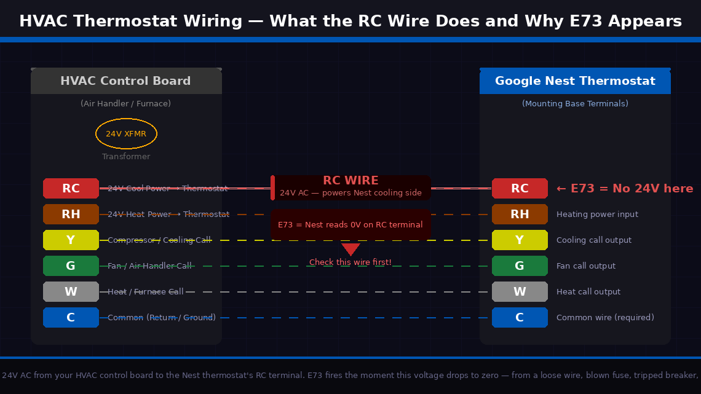
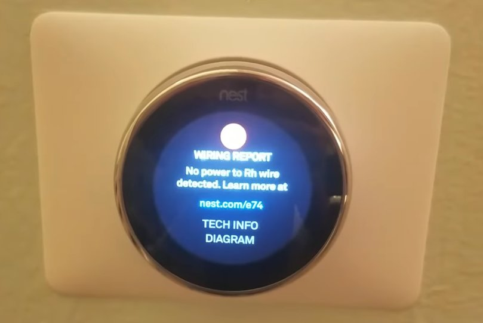
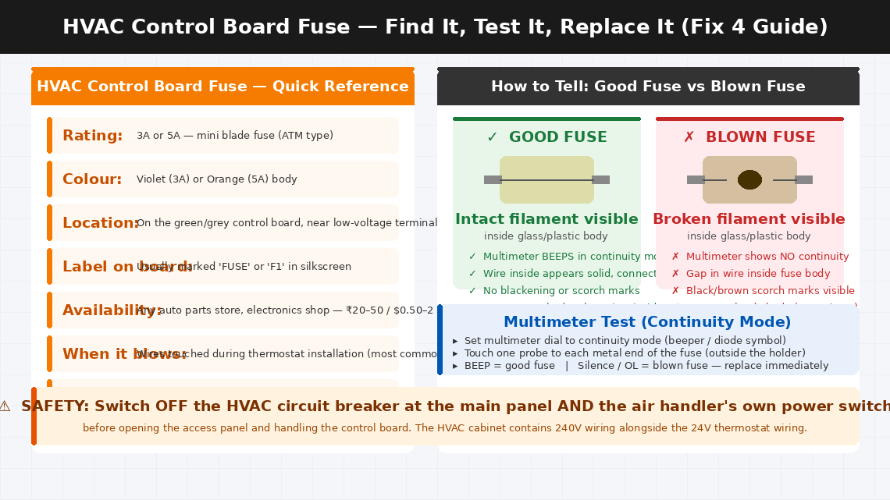
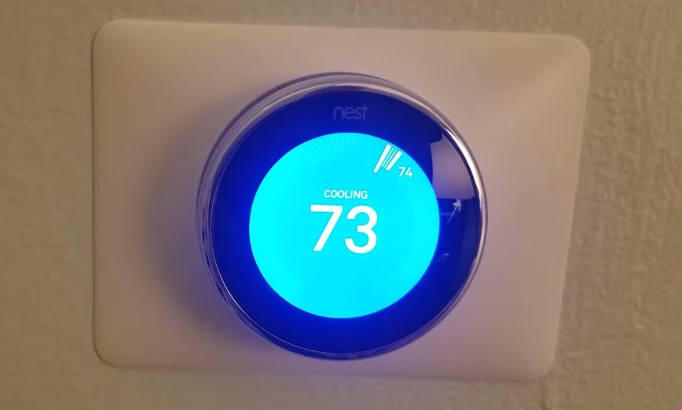

Google Nest Thermostat E73 Error: Cause, Diagnosis, and Fix
E73 on a Nest thermostat means the RC wire — the 24V power feed from the furnace control board — isn't providing sufficient voltage. The thermostat has lost its power source. This is most commonly caused by a blown 3A fuse on the furnace control board, a loose wire at the thermostat base, or a wiring issue introduced during installation. The fuse costs under ₹50 and takes five minutes to replace.
What Does Error E73 Mean?
Simply put, E73 means your Google Nest thermostat is not detecting any voltage on the RC wire terminal — the wire responsible for powering the cooling side of your HVAC system.
HVAC systems communicate with thermostats through a set of low-voltage wires, each assigned a specific letter designation. The RC wire (also called the R-Cool wire or simply “RC”) carries 24 volts AC from your air conditioning or heat pump system’s control board to the thermostat. This 24V signal is what tells the Nest that the cooling system is connected and available to receive commands. When the Nest cannot detect this 24V signal on the RC terminal, it throws E73.
The four most common causes:
- The RC wire has come loose from its terminal on the Nest thermostat itself, or from the corresponding terminal on the air handler control board. A wire that is not fully inserted will not make electrical contact even if it looks connected from the outside.
- A circuit breaker for the HVAC system has tripped. If that breaker tripped — from a power surge, brief overload, or electrical fault — the 24V signal disappears entirely and E73 follows immediately.
- A fuse on the HVAC control board has blown. Most residential air handlers have a small 3A or 5A fuse on their control board that protects the low-voltage thermostat wiring circuit. This fuse blows when there is a wiring short — sometimes caused by the Nest installation itself if wires briefly touched during the setup process.
- The RC wire itself is damaged — cut, corroded, or broken inside its insulation — preventing the 24V signal from reaching the thermostat regardless of how well the connections are made.

Tools Required
Gather these before you start — you may need all of them depending on how far into the fixes you need to go:
- A Phillips head screwdriver (small, for the Nest’s mounting plate and HVAC access panel)
- A flathead screwdriver (small, for the Nest’s wire terminals)
- A multimeter (strongly recommended — essential for Fix 5; a basic model costs ₹300–600 in India or $10–20 in the US)
- A torch or flashlight
- Replacement 3A or 5A mini blade fuses (widely available for ₹20–50 at any electronics shop — keep a few handy before you start Fix 4)
- About 20–30 minutes of your time
5 Fixes — Start Here and Work Down
Go through these in order. Most people stop at Fix 1 or 2. Fix 1 or Fix 2 resolves this for most people.
Before touching a single wire, a clean restart is always the correct first move. A Nest that experienced a brief power fluctuation — from a utility voltage dip, a momentary brownout, or a brief HVAC system shutdown — can latch into an E73 fault state even after normal power has been restored. A restart clears the error log and forces the thermostat to re-read all its wire terminals fresh.
- Press and hold the thermostat’s display (the circular face) for 10 seconds until the screen goes dark.
- Release and wait 5 seconds.
- Press the display once to power it back on.
- Allow the Nest 60–90 seconds to fully reinitialise — it runs a system check and reads all wire terminals during this process.
- If E73 does not reappear and the thermostat returns to its normal temperature display, a temporary power event was the cause.
- Turn on the cooling system from the thermostat and confirm it responds normally.
If E73 comes back within a minute of restart, move to Fix 2.
The fastest external check you can do — and the one most people overlook because it seems too simple — is verifying that the circuit breaker powering your air conditioning system hasn’t tripped. A tripped breaker kills the 24V control power to the system and produces E73 immediately and consistently.
- Locate your home’s main electrical panel — typically in a utility room, garage, hallway cupboard, or on an external wall.
- Open the panel and scan the breakers. Look specifically for:
- A breaker in the middle position (neither fully on nor fully off) — this is a tripped breaker and is easy to miss if you’re scanning quickly
- A breaker labelled “AC,” “Air Handler,” “Furnace,” “HVAC,” or “Cooling” that is in the off or middle position
- If you find a tripped breaker, reset it: push it firmly to the OFF position first, then push it firmly back to ON. A breaker that is only in the middle position is not reset until it has been pushed fully off first.
- Return to the Nest thermostat and wait 60 seconds for the system to reinitialise.
- If E73 clears and the thermostat shows normal operation, the tripped breaker was the cause.

If the breaker is fine, the next most common cause is a loose or improperly seated RC wire at the thermostat’s own terminal block. This happens more often than people expect — particularly on recent Nest installations where wires were trimmed and inserted for the first time, or after the thermostat has been removed and reinstalled.
- Switch off the HVAC circuit breaker at the electrical panel.
- At the Nest thermostat, grip the display face and pull it straight away from the wall — it detaches magnetically from the mounting base with a gentle but firm pull.
- With the display removed, you will see the mounting base with labelled wire terminals around its perimeter. Locate the terminal labelled “RC.”
- Look at the wire inserted into the RC terminal — it should be a red wire inserted all the way into the port with no exposed copper visible between the insulation and the terminal entry point.
- Press the release tab (a small button beside the RC terminal) and gently tug the wire. If it pulls out easily without pressing the tab, it was not fully locked in.
- Strip approximately 10–12 mm of insulation from the end of the RC wire if the end appears oxidised, frayed, or has a poor connection.
- Reinsert the RC wire firmly into the RC terminal — push until you feel the locking mechanism click.
- Visually confirm that no bare copper wire is touching any adjacent terminal — bare wires touching other terminals cause short circuits that blow the HVAC control board fuse.
- Reattach the Nest display, restore the HVAC breaker, and observe whether E73 clears.
If the RC wire is securely connected at the thermostat but E73 persists, a blown fuse on your HVAC system’s control board is the next most likely culprit. This is an extremely common consequence of thermostat wiring work — a brief wire touch during installation creates a momentary short that blows the small protective fuse on the board.
- Switch off both the HVAC circuit breaker and the air handler’s own power switch.
- Locate your HVAC air handler or furnace — typically in a utility closet, basement, attic, or dedicated HVAC room.
- Remove the access panel — usually held by one or two screws or a simple lift-and-pull mechanism.
- Locate the control board inside — the green or grey circuit board mounted to the interior wall of the unit.
- Look for a small blade-style fuse on the control board — a rectangular fuse in a fuse holder, typically rated 3A or 5A, usually labelled “FUSE” or “F1” on the board.
- Pull the fuse out of its holder using your fingers or needle-nose pliers.
- Hold the fuse up to a light source — a blown fuse will show a visibly broken filament inside the glass or plastic body, often with black scoring.
- Alternatively, set your multimeter to continuity mode and touch the probes to each end of the fuse. A good fuse beeps (continuity present). A blown fuse shows no continuity.
- Replace the fuse with a new one of identical rating — do not substitute a higher-rated fuse.
- Restore power, restart the Nest, and check whether E73 has cleared.

If the fuse is intact, connections look correct, and E73 persists, use a multimeter to directly confirm whether 24V AC is actually present at the RC terminal — which determines whether the fault is in the wiring itself or in the HVAC control board.
- Restore power to the HVAC system (breaker and unit switch back on).
- Set your multimeter to AC voltage mode (VAC) and select the 200V range.
- At the Nest mounting base, touch one probe to the wire in the RC terminal and the other probe to the wire in the C terminal (the common wire — blue or black). If you don’t have a C wire, touch the second probe to the RH terminal instead.
- Read the voltage display:
- 22–26V AC: Voltage is present and normal. The problem is with the Nest itself — contact Google support.
- 0V: No voltage reaching the thermostat. The fault is in the wiring between the control board and the thermostat, or the control board is not outputting 24V.
- Below 18V: Insufficient voltage — possible transformer failure on the control board.
- If voltage is absent at the thermostat but the fuse on the control board is intact, trace the RC wire physically from the thermostat back to the air handler — look for any point where it may be stapled too tightly, pinched in a door frame, or visibly damaged.
- A wire that tests at 0V despite a good fuse and correct connections at both ends has an internal break and needs to be replaced — a straightforward task of running a new wire through the same path.

When to Call a Professional
E73 is one of the more approachable Nest error codes for a careful homeowner to resolve. But there are clear situations where the problem needs a licensed HVAC technician or electrician:
- The circuit breaker trips repeatedly — resetting once and monitoring is fine. A breaker that trips more than twice in a short period is signalling a failing capacitor, a seized motor, or a wiring fault inside the HVAC system.
- The control board fuse blows again immediately after replacement. A fuse that blows within seconds indicates a direct short circuit in the low-voltage wiring that requires proper test equipment and HVAC wiring diagram familiarity to trace and clear.
- The multimeter test shows 0V at the control board’s RC output terminal — meaning the board itself is not generating the 24V signal. HVAC control board replacement is a professional job requiring compatibility verification with your specific system model.
- You are not comfortable working near the HVAC cabinet’s high-voltage wiring. The distinction between the 24V thermostat wiring and the 240V compressor wiring inside the same cabinet is not always visually obvious. This is a completely reasonable boundary to draw.
- Your Nest thermostat is within its warranty period. Google offers a 2-year limited warranty on Nest thermostat hardware. Contact Google Nest support before purchasing any replacement parts if the device is under two years old.
To reach Google Nest support:
- Visit support.google.com/googlenest and select your thermostat model
- Live chat and phone support are available through the support portal
- Have your Nest’s serial number ready — visible in the Nest app under Settings > select your thermostat > Technical Info
For HVAC technician assistance in India: Search for Daikin, Voltas, or Blue Star authorised service centres in your area for split AC systems. For central HVAC, contact the original installation company or a licensed HVAC contractor.
Quick Summary
| Fix | Difficulty | Time Needed |
|---|---|---|
| Restart the Nest thermostat | Very Easy | 2 minutes |
| Check and reset the HVAC circuit breaker | Very Easy | 3 minutes |
| Inspect and reseat the RC wire at Nest terminal | Easy | 10 minutes |
| Inspect and replace the HVAC control board fuse | Moderate | 15 minutes |
| Test RC wire voltage with a multimeter | Moderate | 10 minutes |
Start at the top and work downward. A tripped circuit breaker or a loose RC wire terminal resolves E73 for the majority of Nest users — and both take under five minutes to check. Only pick up the multimeter if the simple mechanical fixes haven’t cleared the error.
Fixed your Nest E73 with one of these steps? Fix 4 — the blown control board fuse — is the one that surprises most people the most. It is also the most common consequence of a DIY thermostat installation where wires briefly touched during the swap. Always switch off the HVAC breaker before handling thermostat wiring, and you’ll never need to deal with a blown control board fuse again.